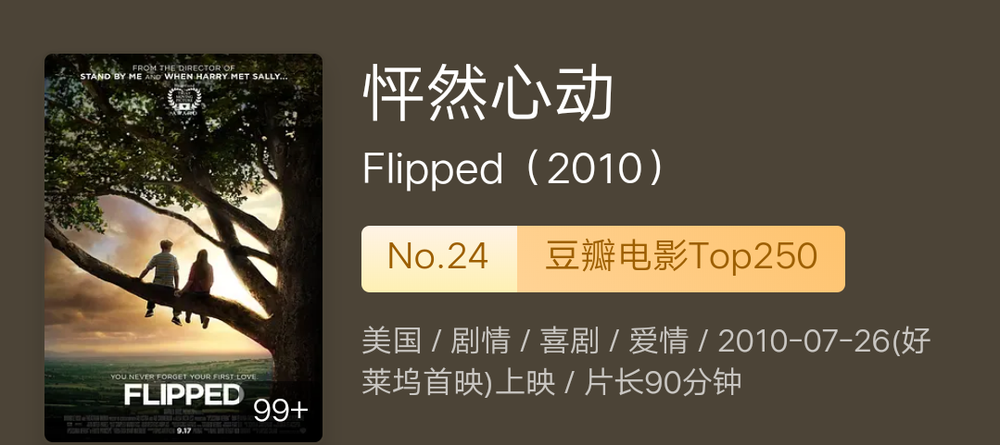
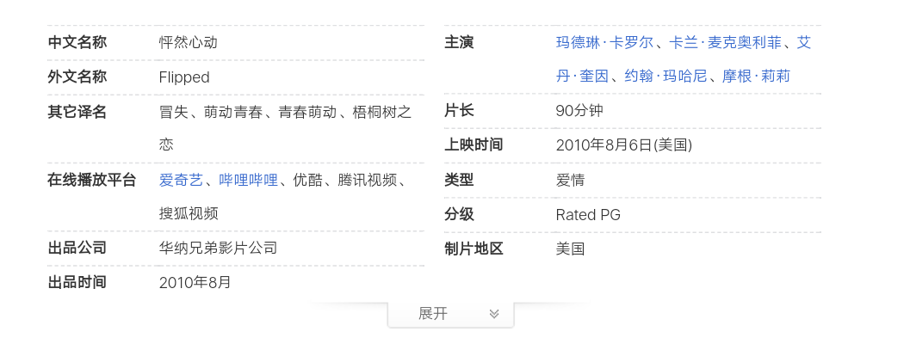
怦然心动
2010年，罗伯·莱纳以63岁的年纪自编自导了爱情喜剧片《怦然心动》。
这已不是他第一次执导爱情片。早在1989年，他执导的爱情片《当哈利遇上莎莉》已入围了第47届美国金球奖电影类最佳导演奖。
从题材和表象来看，二者算是同一类型。只有遇见，才会有怦然心动的瞬间，才会有更多的故事。
然而，切入点却又不尽相同。《怦然心动》的切入点直接是初恋，而《当哈利遇上莎莉》的切入点只是当朋友。一个的目的是得到对方的吻，一个的目的是和对方当朋友。
这一次，《怦然心动》算是圆了他的纯情梦。
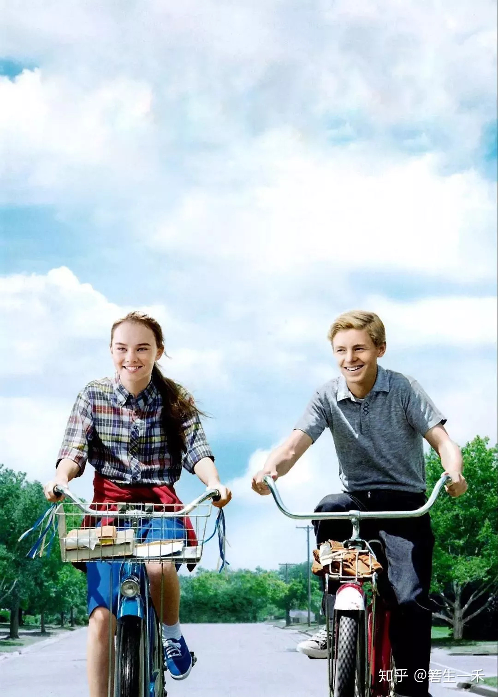
美国电影给我们的感觉除了吊炸天的特技、特效，天马行空的想象，满屏外星人、生物人和黄暴色情的镜头，恐怕所剩无几。而这部影片，没有一个色情镜头，除了礼节性的需要，甚至连一个接吻的镜头都找不到，更别说其他，真正做到了“爱之于我，不是肌肤之亲，不是一蔬一饭。它是一种不死的欲望，是疲惫生活中的英雄梦想”。
可以这样说，《我们这一天》给了我们多少温情，《怦然心动》就给了我们多少纯情。
目前该电影在豆瓣电影 Top 250的排行榜里排名第24，评分9.0，是前30名中剧情最单一的电影。
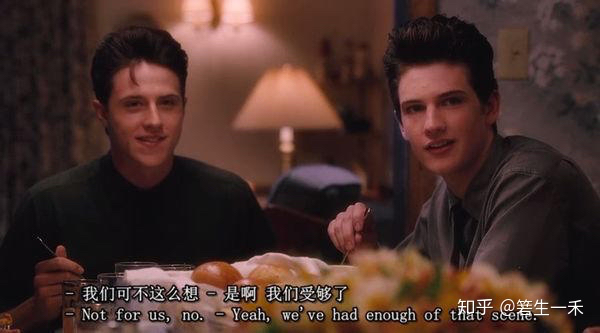
《怦然心动》的故事很简单 ，讲述了两个小学生从初识、暗恋、矛盾、吃醋、挽回到重新认识的过程。虽然少了恋爱中和空窗期的许多羁绊纠葛与酸甜苦辣，但依然精彩斐然。
罗伯·莱纳的表现手法纯粹，剧情单一不做作，从头到尾只讲述了一对主角的爱情故事。虽然中途为了化解矛盾牵出了外祖父与外祖母的爱情，但是通篇未直接讲述二人的故事，只是将其作为一个长者的诸多教诲，给男女主角以启迪，让他们认识自我，发现自我、完善自我。
或许是为了使这部电影看起来更加唯美，更有那种初恋般纯纯的情感，影片用华丽的手法拍摄了诸多优美的风景以及柔情的配乐，为主角的动作及故事情节发展加以渲染和弥补。如优美的田园风景，太阳初升与落日余晖，高大的梧桐树；在电影即将结束时，布莱斯和朱莉一起种树时播放的音乐《Let It Be Me》恰到好处。
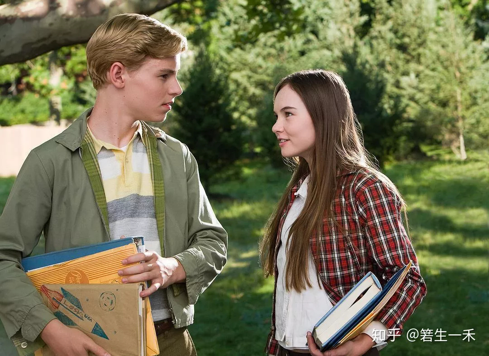
斯人若彩虹，遇上方知有。
自从玛德琳·卡罗尔饰演的朱莉和卡兰·麦克奥利菲饰演的布莱斯相遇后，朱莉迷恋上布莱斯的蓝色眼睛，乃至于他的整个人，爱屋及乌的最高表现也莫过于此。
遇到你的一瞬间，怦然心动。
朱莉最大的愿望就是得到布莱斯的吻。因为一个吻，从小学等到高中；因为一个吻，不在乎对方的冷漠与无动于衷，这种坚韧与痴情就已足以让很多人动容。
她虔诚地相信三件事：树是圣洁的、她在后院里饲养的鸡下的蛋是最卫生的、有一天她会和布莱斯接吻。而这三件事都被布莱斯的所作所为破坏了。
布莱斯对朱莉的示好感到厌烦、绝望，一直想逃却逃不开。他不理解为什么会有人把养鸡和坐在树上看成是非常有乐趣的事。甚至一度因为布莱斯的无知、懦弱、胆怯而使二人离心。
朱莉最喜欢坐在梧桐树上为同学们报告校车的具体方位，而布莱斯很讨厌这种行为。当梧桐树的主人想建房而需要砍掉梧桐树时，朱莉请求布莱斯一起守护她心中的圣树，布莱斯决绝。
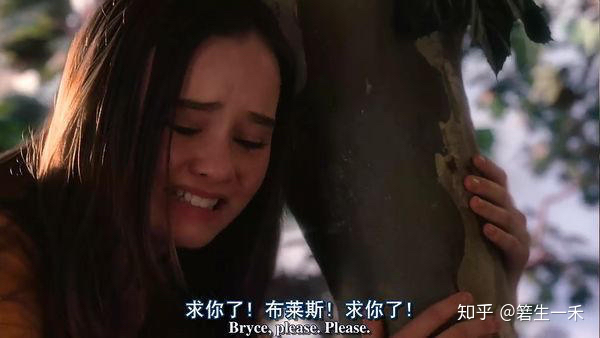
作为观众的我们，看到朱莉眼含泪水深切恳请的语气，本以为布莱斯会伸以援手，哪怕以一个陌生人的角度帮助一下别人也好，可是咱们的男主角并没觉得有任何表现，而是在校车来了之后直接上车走了，留下女主角一人独自守护心中的圣树。
此时朱莉对布莱斯的感觉已经有轻微动摇。自己视若珍宝拿命守护的东西却被自己最爱的人视若粪土，还有什么比这更绝望呢？
朱莉养的鸡下蛋后，为了让布莱斯尝到新鲜鸡蛋而送去他家。布莱斯的家人因为朱莉家院子慌乱不堪，因为家人讨论害怕鸡蛋有沙氏杆菌而扔掉鸡蛋。就因为他没有勇气将鸡蛋还给朱莉。
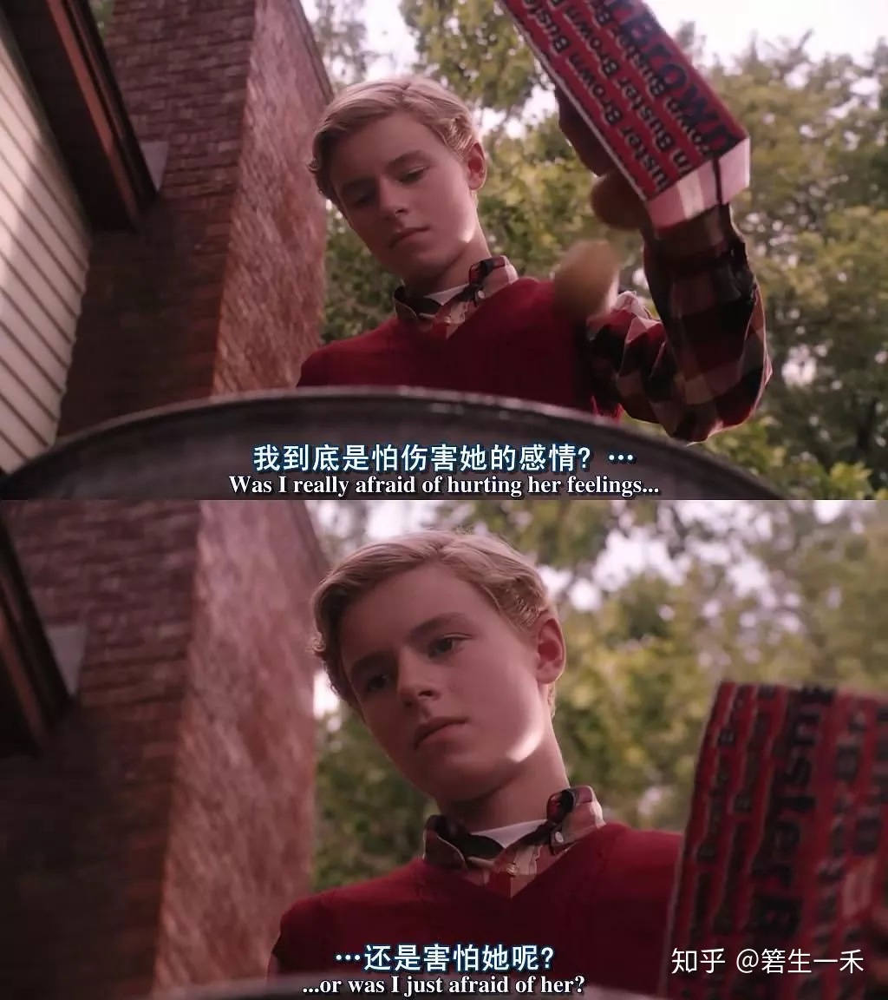
朱莉最想得到布莱斯的吻，但是因为梧桐树和鸡蛋事件，让朱莉开始觉得布莱斯漂亮的蓝眼睛也许和他本人一样其实很空洞，不配得到她的爱。这是一个心动感觉由盛转衰的过程。
而与此同时，听从外祖父的至理名言，丢掉对朱莉戴上的“有色眼镜”后开始慢慢了解真实的朱莉，反而觉察到了朱莉的魅力，开始主动追求她。
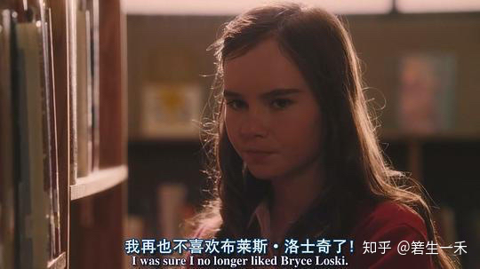
在这个过程中，影片用了大量的镜头来表现一个情窦初开的男生在面对自己喜欢的女生面前会做些什么事？
懵懂、纠结，又带点不想让别人发现的小心思。这是一个心动感觉由衰转盛的过程。
他们就像两条直线，短暂相交后越离越远。而外祖父又像一块吸铁石，将直线再次拉向同一个地方。
外祖父像是一座桥梁，连接起两截断裂的路。
影片除了讲述少男少女们的爱情，还体现了个人自尊与爱情的辩证关系、家庭对孩子成长的重要性。
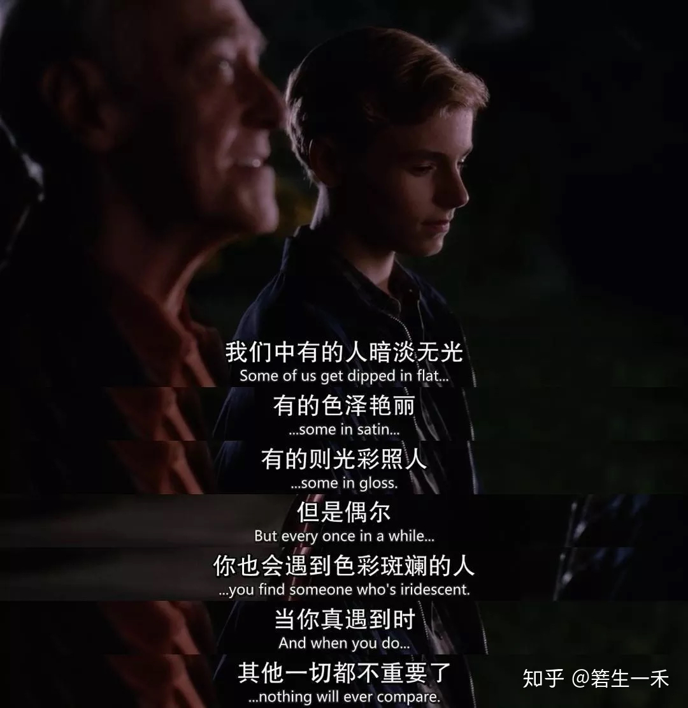
朱莉从小喜欢布莱斯，可是在碰到要牺牲自尊才能得到时，她放弃了。爱一个人要做的是付出与努力，而不是低到尘埃。拿自尊换来的爱情，不要也罢。
她的独立、勇敢、天真与伟大时刻散发出万丈光芒，而培养她的家庭也非常友爱、高尚。
虽然家庭条件不好，但是她用勤劳来补充，自己修理草坪。就算父母把钱用来为叔叔找最好的私人疗养院而无法改善生活条件，当她说拿出自己卖鸡蛋的钱来补贴时，父母也坚决不要。
哥哥们想玩两年音乐再去上学，朱莉的父母也没有意见，甚至很支持他们的决定。可以说，朱莉的父母对他们孩子的尊重是这个家庭和谐的最主要因素。
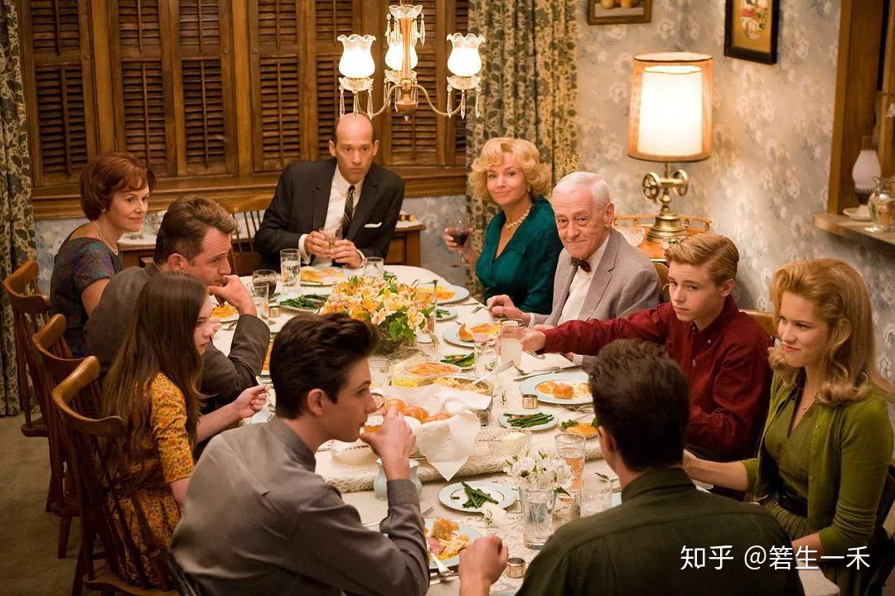
而布莱斯的家庭却正好相反。布莱斯家属于中层阶级，父亲目空一切。挤兑外祖父，对孩子需要全部的权威，明显带有恶意的玩笑几度使家庭关系达到冰点。
电影拍了两场家庭矛盾。一次是布莱斯家，一次是朱莉家。
布莱斯的父亲和女儿争吵的时候无法冷静，无法用事实与理论说服自己的女儿，最终不得已打了女儿一巴掌。
就如同影片中的台词一样。他们把孩子只当做孩子，不在乎他们的思想、观点、感受，以至于在孩子叛逆时期无法正确引导。
朱莉家则是另外一种情况。朱莉的妈妈因为丈夫的心善而抱怨，由此当着朱莉的面争吵后，轮流去向朱莉道歉。他们把孩子当成一个完整的、有思想的人，尊重、理解并全心爱着他们。
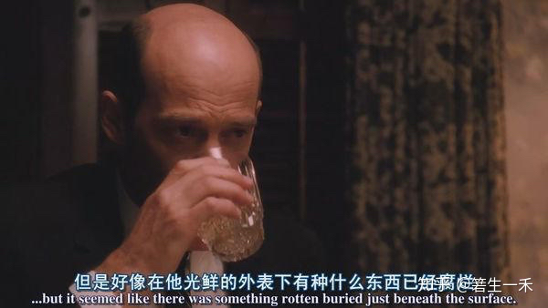
心理学上有个说法：青少年根本就没有什么所谓的青春期、叛逆期，只是他们一直在进步，而教育他们的人一直在原地踏步。当教育者的思想落后于青少年后，他们做出决定的正确率、合理率就会下降，和青少年的思想就不会重合，从而引发叛逆心理。
换位思考，当我们遇到一个处处不如自己的人时，我们会毫无理由的听从他们的观点吗？显然不会。
所以，《怦然心动》既是一部讲述爱情，讲述初恋的电影，也是一部关于教育的电影。小众而又特别。
它将你置于一种温暖的、有趣的，又充满人文关怀的氛围中，一切以人的思维为主。
它放任朱莉和布莱斯两个人心理自由发展，尊重他们情窦初开的感觉，并在出现问题的时候适时加以引导，让问题不再恶化。
他们不直接插手问题的解决过程，而是让孩子们自己解决，明白其中的人生哲理，完善以及修复他们的心灵感受。
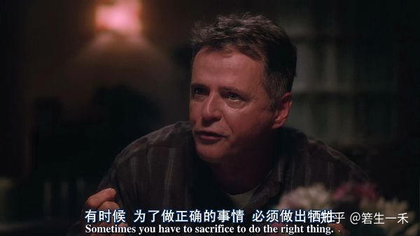
他们的爱情从一开始的我跑你追到我追你跑再到互相追逐，花了将近一个青春。他们追逐爱情的过程也是他们心理的自我完善过程。
俗世男女的随性和妥协、喜新和厌旧以及其他杂芜在该片中皆没有涉及，男女之间的爱情不需要任何手段，无论是追求还是坚守。这就让导演和编剧集一身的罗伯·莱纳没有太多发挥的余地，而他就只管利用这没法发挥自己想象的拐角处找寻最懵懂、纯真的感觉。
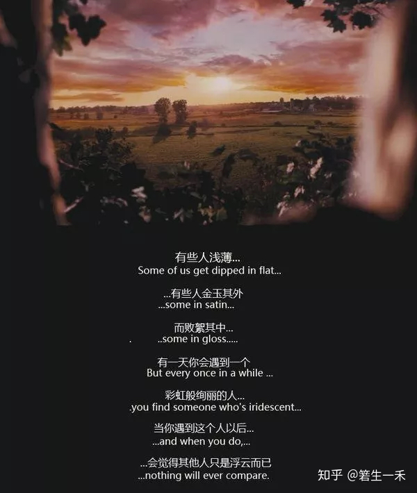